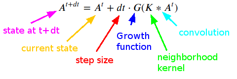
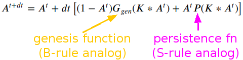

Glaberish: a Life-like Lenia framework
Lenia

Glaberish

A comparison of Lenia (top) and glaberish updates.
- The issue is that Lenia is a totalistic CA framework: the growth function depends only on neighborhoods.
- (Note Life and Life-like CA are only 'outer-totalistic', though it is common to say 'totalistic' as shorthand).
- Glaberish splits Lenia's growth function in two: genesis (B analog) and persistence (S analog).